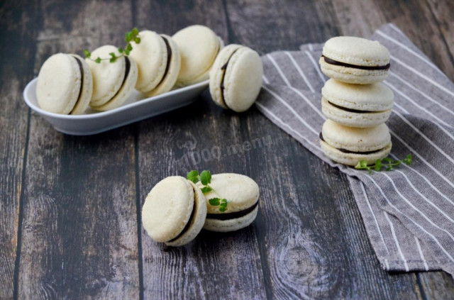

ООО "Русский дар" 
Вернутся в начальный раздел | Вернутся на главную страницу
| Ингредиенты для макарон: | Ингредиенты для ганаша: |
|---|---|
|
|
Оборудование: венчик, миксер, миска, противень, тефлоновый коврик, духовка, кондитерский мешок и ложка столовая.

Подготовьте необходимые продукты. Очень важно точно отмерить их количество в граммах, поэтому вам обязательно понадобятся кухонные весы. Белки должны быть комнатной температуры, поэтому заранее выньте яйца из холодильника. Если на это нет времени, то согрейте их в теплой воде.

Миндальную муку и сахарную пудру просейте, чтобы разбить комочки. Взвесить их лучше после просеивания.

Тщательно перемешайте с помощью венчика пудру и муку.

Отделите белки от желтков. Следите за тем, что ни одна капля желтков не попала к белкам, иначе последние не взобьются. Начните взбивать белки н малых оборотах миксера. Как только образуется небольшая пена, добавьте щепотку лимонной кислоты. О том как правильно взбивать яичные белки вы также можете прочитать в статье, ссылка на нее есть в конце этого рецепта.

Увеличьте скорость миксера и продолжайте взбивать. Тонкой струйкой в несколько приемов введите в белки сахар. Масса начнет белеть и увеличиваться в объеме.

Взбивать белки надо до состояния устойчивых пиков. Белки должны держать форму. Если вы перевернёте ёмкость, то белковая масса не вытечет.

Введите белки в смесь муки и пудры. Аккуратными, но уверенными движениями начните всё перемешивать. Лопаткой надо работать снизу вверх, делая как бы захватывающие и переворачивающие движения.

Мешать массу надо достаточно долго, она должна стать текучей, но не жидкой. Если лопатку поднять над миской, то тесто не будет падать кусками, а медленно стечет с нее.

Переложите тесто в кондитерский мешок с самой простой круглой насадкой.

Печь макаронс лучше на тефлоновом коврике. Отсаживайте заготовки, держа мешок перпендикулярно противню и оставляя между ними промежутки. В конце надо несколько раз ударить противень о стол, чтобы выгнать из теста воздух. Оставьте противень с заготовками на 1-1,5 часа при комнатной температуре. На их поверхности должна образоваться корочка, которая не даст тесту треснуть при выпечке. Потрогайте их пальцем, заготовки должны быть совершенно не липкими.

Выпекайте макаронс в духовке при температуре 150 градусов около 15 минут. Через пять минут после начала приоткройте дверцу на минуту, чтобы выпустить пар. Пирожные должны начать расти, образуя снизу фирменную "юбочку". Если потрогать верхушку в конце выпечки, то крышечка не должна двигаться относительно юбочки. Это значит, что пирожные пора вынимать. Снимайте их с коврика только после полного остывания. Время и температура выпекания у вас могут отличаться.

Подготовьте необходимые ингредиенты для начинки - шоколадного ганаша. Сливки лучше брать жирные. Шоколад выбирайте темный.

Сливки вскипятите в небольшой кастрюльке или сотейнике.

Добавьте к сливкам поломанный на кусочки шоколад и хорошо перемешайте до полного его растворения.

Добавьте сливочное масло и снова перемешайте.

Перелейте в кондитерский мешок ганаш и уберите его в холодильник для остывания и загустения. Я в качестве кондитерского мешка использовала простой полиэтиленовый пакет.

У пакета отрежьте кончик и выдавите остывший ганаш на одну половинку-заготовку. Подберите вторую половинку по размеру и накройте ей первую.

Таким образом сформируйте все пирожные. Перед употреблением их лучше охладить. Приятного аппетита!

Шаг 1, Шаг 2, Шаг 3, Шаг 4, Шаг 5, Шаг 6, Шаг 7, Шаг 8, Шаг 9, Шаг 10, Шаг 11, Шаг 12,Шаг 13, Шаг 14, Шаг 15, Шаг 16, Шаг 17, Шаг 18.